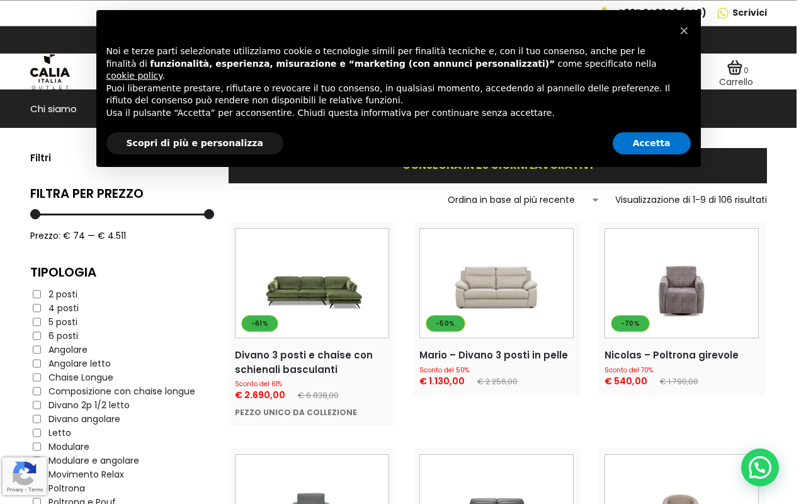
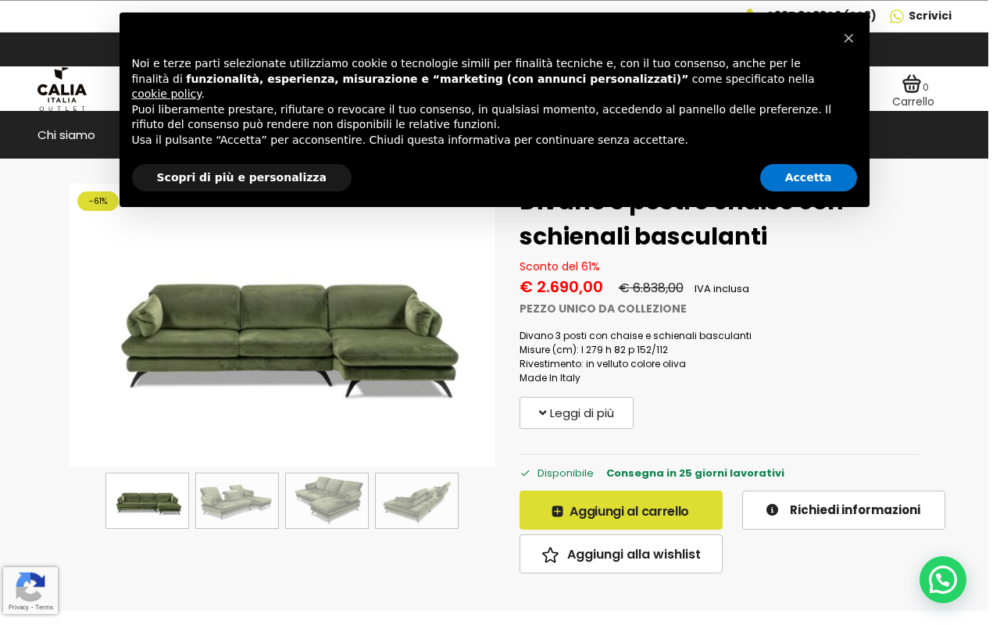

Gli eventi ecommerce GA4 (add_to_cart, view_item, view_item_list, view_cart, begin_checkout, remove_from_cart) sono stati aggiunti al plugin custom e sono ora attivi sul sito. Il tracciamento purchase era già funzionante dal 4 marzo. La cache del sito è stata pulita e gli eventi sono verificati con test automatici.
calia-datalayer-gtm v1.1.0 deployato con evento purchase. GTM4WP rimosso. Gli altri eventi ecommerce non erano stati migrati.


add_to_cart → evento GA4 + conversione Google Adsview_item e view_item_list → eventi GA4purchase → conversione Google Ads (se non già configurato)
| Campo | Valore |
|---|---|
| Server | calia (165.232.97.86) |
| Path | /home/1016313.cloudwaysapps.com/ufmdxxnrzy/public_html/ |
| URL | caliaitaliaoutlet.com |
| Plugin | calia-datalayer-gtm v1.1.0 → v1.2.0 |
| GTM Container | GTM-TK5RDQQC |
| Scenario | Bug fix — eventi ecommerce mancanti |
| Causa | GTM4WP rimosso il 4/3 senza migrare gli eventi ecommerce al plugin custom |
| Verdict | FIXED — 100/100 |